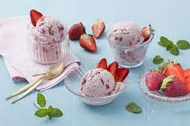

Receita salada fresca
Ingredientes Opção de sabor: morango 600 gramas de morangos picados grosseiramente Modo de Preparo Sorvete milagre 1 Coloque em um liquidificador 2 latas de leite condensado e bata bem por 3 minutos. 2 O leite condensado vai mudar a textura e não vai mais escorrer. Desligue o liquidificador, transfira para uma tigela e reserve. 3 Em uma batedeira coloque 600 mililitros de creme de leite fresco bem gelado e bata bem até ficar em ponto de chantilly. 4 Desligue a batedeira, transfira o creme para a tigela com o leite condensado batido, adicione 2 colheres de chá de essência de baunilha, misture delicadamente e despeje num pote com tampa ou em taças. 5 Leve ao freezer até endurecer por aproximadamente 3 horas. Retire do freezer e sirva em seguida.
